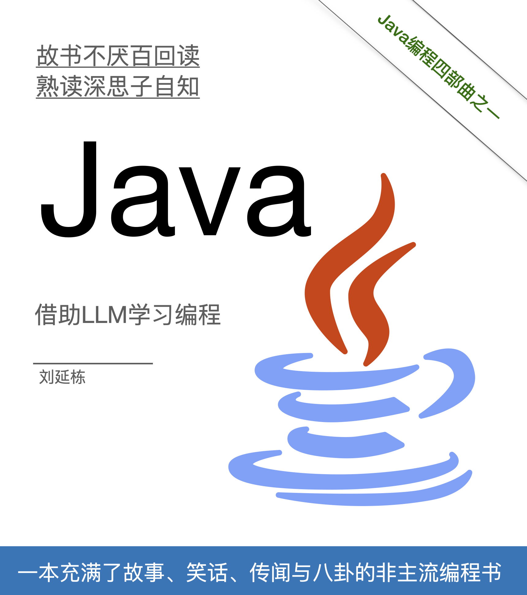
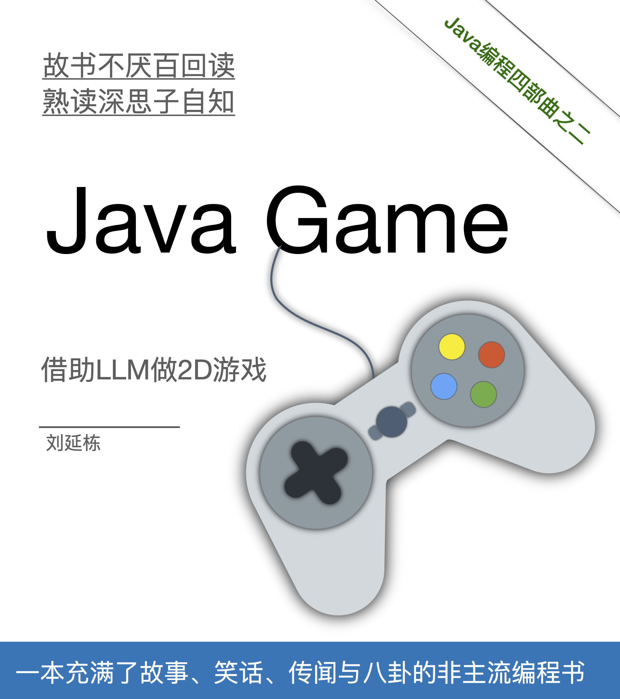
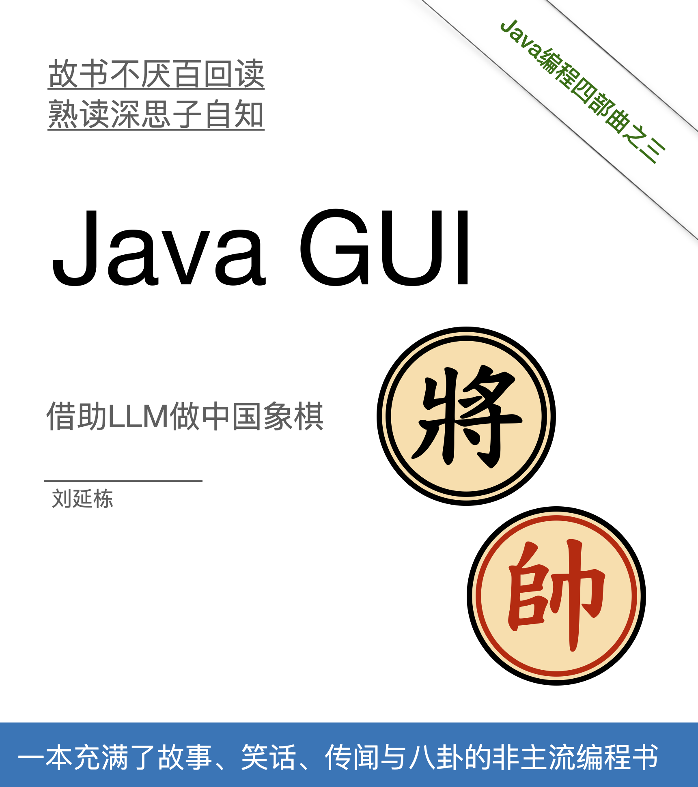
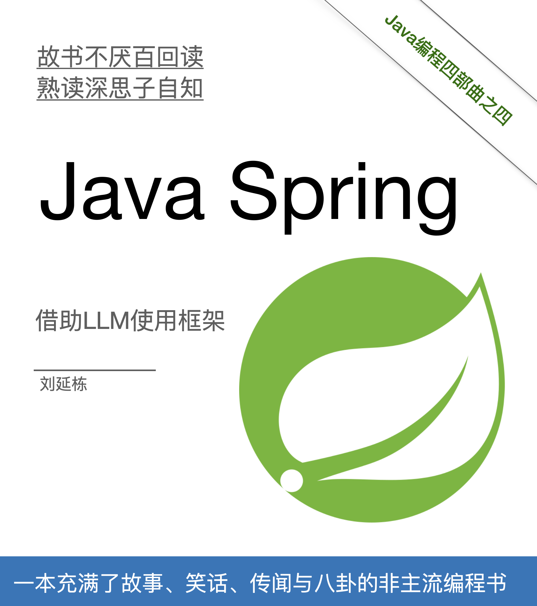

Java编程四部曲
1 为什么我一下子有了四本书稿呢？
|  |  |
|---|---|
|  |  |
长期听我电台的人可能知道，大约4年前我就说，我正在写一本“Java编程”的书。第一次写书，激情满满，很快就写完了“初稿”，就跟当初录电台一样，一天录一期。但是“初稿”与“出版”之间的距离非常遥远——大约是大唐到灵山的距离吧，期间要经历九九八十一难，才有可能出版。我以前又没出过书，算是初生牛犊不怕虎，写就完了……
“写书”与“录电台”是容易形成“习惯”的，把书稿交给出版社后，就跟失恋了一样，心里空落落的，还是想每天写点东西。我有个“自以为是”的优点，我能把一件事情坚持下来，坚持很久。
以前我“天真”的认为，坚持是一种好的品质，但是在遭遇很多磨难之后，我才意识到，如果“对错误的人与事，坚持不如早点放弃”。
对个人可以掌控的事情——这种事不多——坚持还是有用的。
比如我坚持每个月录3-4期电台，坚持了9年，现在正在奔向500期电台的路上，我觉得这已经是我的生活休闲的方式。
比如我坚持背单词，当年听了新东方俞敏洪的忽悠，坚持背单词，后来我就成了学霸，英语大概都能考到90%的分数。
比如写书，我当初加入了豆瓣一个小组，叫每天写1000字……刚开始觉得有点难，后来，我每天写技术书，平均可以写2500-3000字，这就是这四本书的来历。
但是，有些事情是坚持不能改变的，就像你不能坚持每天用一杯25摄氏度的水，想用4天的时间凑出100摄氏度的水。如果路一开始就走错了，越坚持，错的就越离谱。
出版一本书，更多的是“修改”，而创作一本书，更多的是“炫耀”。我喜欢“炫耀”我懂的多，而不是“修改”细枝末节。
不经历过不知道，在漫长的等待过程中，我觉得我还是继续写点书吧，毕竟只写一本，好像“虚荣”的不够劲。就像我想抽大烟，结果只抽了一根香烟，不过瘾。索性又写了三本，当时的想法是出一本，然后再出一本，继续出一本，最后出一本，搞个“Java编程四部曲”，过过瘾。
比较出名的东西，都是三部曲，四部曲呢……
比如《家》《春》《秋》、《教父》、《黑客帝国》、《多情剑客无情剑》、《边城浪子》、《九月鹰飞》、《天涯·明月·刀》、《飞刀，又见飞刀》……
所以我也想试试。
九九八十一难，结果第一难都没熬过去。主要还是我个人生活上的失败，遇人不淑，滥生无辜……人到中年，低头发现胸口插了一把刀子，还是从背后插的。
死倒是没死，但是痛是真痛。浑浑噩噩的开始收拾残局，该断的断，该舍的舍，该离的离。
其中就包括这几本书，电台的听众，总是时不时的问起我，我只能说，再等等看。一般来说，我都把初稿发给他们一部分，比如前4章。第一本书我写了21章，跟出版社搞了3年，才磨到第5章。如果按照这个进度，等着出版，要10年吧。再加上Java市场低迷，人工智能异军突起，传统的编程书就是鸡肋啦，我自己也衡量了一下，我的书，若是出版，极大的概率是最后按斤卖给废品站回收处理，对地球也是一种伤害。
不应该的坚持，对别人是一种伤害，不如放手。出版的梦也就惊醒了，结果，我现在手里有了4本书的书稿 :)
2 这四本书要100万字，不想开源，想卖电子书
这四本书我就在网上卖电子版好了。这四本书总共200元。因为是电子书，按照互联网的规则，其实只能“卖”一本，然后其它就可以“免费”阅读了。这个我是知道的，所以我搞了一个社区叫学伴：https://xueban.app，如果你购买了这四本书，我会拉你到这个社区里。
这个社区的主要话题是：学技术、学外语、搞事业。 在购买页面里，我会详细讲一下我做这个社区的想法。
如何购买呢？我专门写了一个购买的介绍，介绍了这四本书的购买。
链接如下： 如何购买这四本电子书？